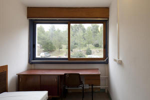
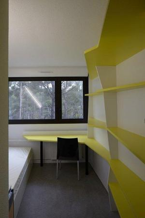
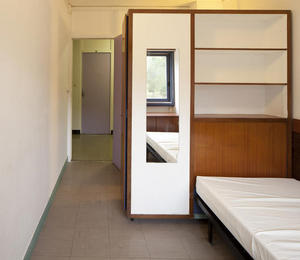
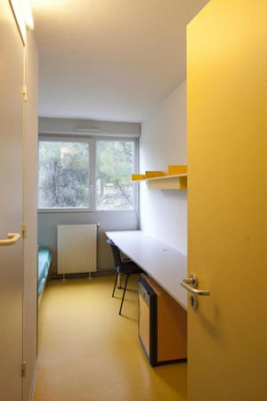

Cité Universitaire de Luminy
Bâtiments situés sur le campus de Luminy
Loin du centre ville, à quelques pas de Polytech Marseille. Au pied du Mont Puget , et à proximité des Calanques.
Le cadre est parfait pour faire du sport avec l'université ( badminton, fitness, volley etc.) ou partir en footing dans la forêt ou la montagne.
Le plus gros avantage est bien évidemment la proximité avec l'école : en effet, vous n'êtes qu'à 7 minutes à pied de vos salles de classe !
Très pratique le matin, réveil à 7H30 permis !
En plein coeur du campus universitaire (restau U, bibliothèque, complexe sportif), mais assez loin des commodités du centre ville.
Les bâtiments
La cité U regroupe 6 bâtiment différents. En effet, selon le choix de votre chambre, le loyer, la superficie et le confort varient du simple au double ! Nous allons donc ici lister et décrire objectivement les 6 différents bâtiments afin de vous aider à faire votre choix ! :)
Nous avons réalisé un sondage auprès des élèves et avons nous même vécu dans ces lieux, on sait de quoi on vous parle ;)
Le bâtiment A
- Chambres rénovées de 9,9 m².
- Salle de bain et toilettes individuelles (Le gros + niveau confort, intimité et hygiène !).
- Cuisine commune, un petit frigo par chambre.
- Loyer de 244€ (possibilité d'ALS).
- Accès internet : Prise Ethernet (Ramener un cable ethernet pour s'y raccorder). Abonnement à 5,99€/mois via Wi-First. Connexion assez bonne !
- Un bon choix, le rapport qualité prix y est, les habitants sont satisfaits !
Le bâtiment B
- chambres non-rénovées de 9 m².
- Salle de bain et toilettes communes et en piteux état (vraiment!). Un lavabo dans la chambre.
- Cuisine commune, pas de frigo dans les chambres.
- Loyer de 155€ (possibilité d'ALS).
- Accès internet : Accès WIFI. Abonnement à 5,99€/mois via Wi-First. Connexion décente.
- Laverie disponible, il faut compter 4,60€ pour nettoyer vos habits et les sécher.
- En clair : Bâtiment à éviter ! Mieux vaut chercher mieux en dehors du campus.

Le bâtiment C
- chambres rénovées de 9,9 m².
- Salle de bain et toilettes individuelles (Le gros plus niveau confort, intimité et hygiène !).
- Cuisine commune, un petit frigo par chambre.
- Loyer de 244€ (possibilité d'ALS).
- Accès internet : Prise Ethernet (Ramener un cable ethernet pour s'y raccorder). Abonnement à 5,99€/mois via Wi-First. Connexion assez bonne !
- Présence d'un veilleur H24.
- Salle de travail mise à disposition, plutôt sympathique et fréquentée.
- Un autre bon bâtiment, également le plus proche des arrêts de bus, on vous le conseille aussi.

Le bâtiment D
- Studette rénovée de 14m².
- Salle de bain et toilettes individuelles (Le gros plus niveau confort, intimité et hygiène !).
- Kitchinette individuelle
- Cuisine commune en complément pour les plaques chauffantes ( interdites dans les chambres ).
Le bâtiment E
- Chambres traditionnelles de 9 m².
- Salle de bain et toilettes communes (correct, mais cela reste des toilettes communes. Possibilité de mauvaises surprises). Un lavabo dans la chambre.
- Cuisine commune, un petit frigo par chambre.
- Loyer de 155€ (possibilité d'APL).
- Accès internet : Acces WIFI. Abonnement à 5,99€/mois via Wi-First. Connexion décente !
- Laverie disponible, il faut compter 4,60€ pour nettoyer vos habits et les sécher.
- Ici, c'est la formule économique. Si vous n'avez pas de quoi prendre une chambre à 244€ , visez ce bâtiment plutôt que le B.

Le bâtiment F
- chambres rénovées de 9,9 m².
- Salle de bain et toilettes individuelles (Le gros plus niveau confort, intimité et hygiène !).
- Cuisine commune, un petit frigo par chambre.
- Loyer de 244€ (possibilité d'ALS).
- Accès internet : Prise Ethernet (Ramener un cable ethernet pour s'y raccorder). Abonnement à 5,99€/mois via Wi-First. Connexion assez bonne !
- Un très long bureau, pratique pour travailler.
- Super bâtiment, on passe une super année dedans !
